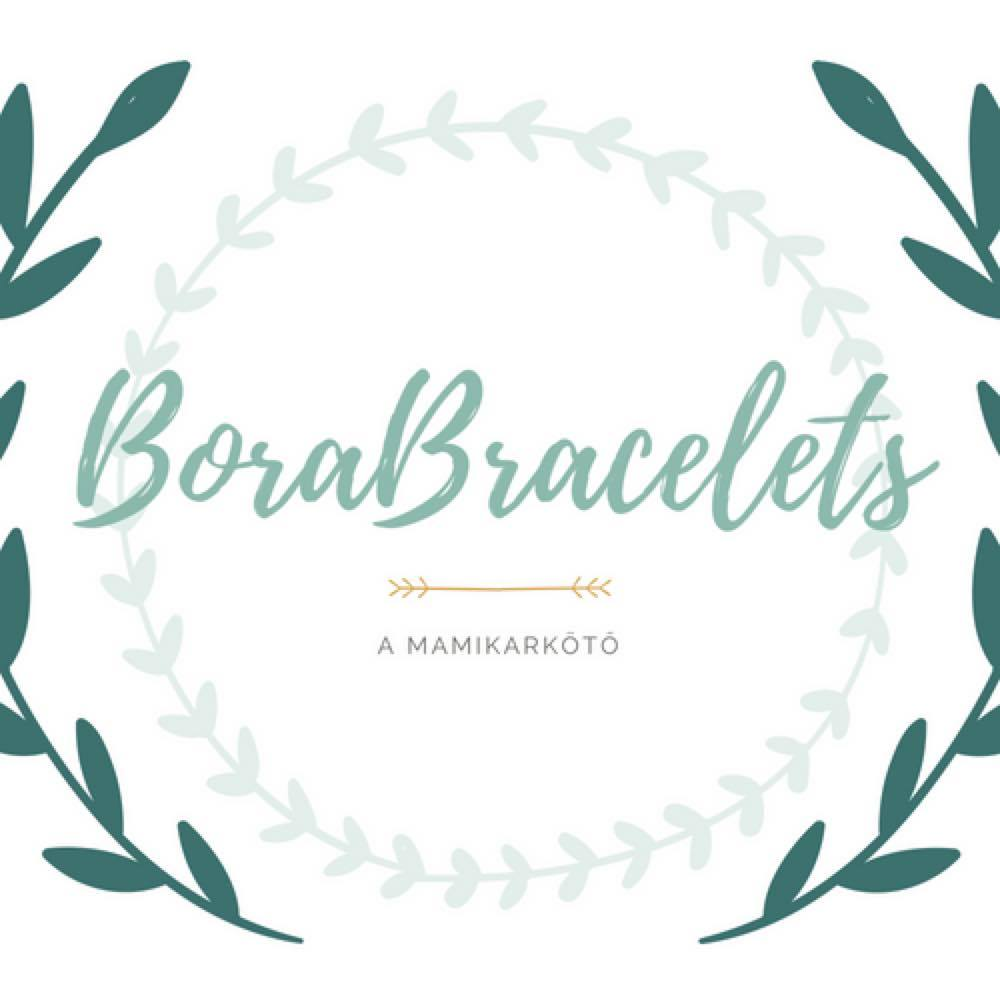

Üdvözöllek!
Tárnoki Nikolett vagyok, a CreatAd alapítója. A közösségi média oldalak aktív használatával 2015 óta két saját, sikeres brand-et építettem fel.
Fontosnak tartom a megfelelő háttér tartalmat egy-egy sikeres vállalkozás mögött. A hivatalos weblapon túl ma már elengedhetetlen a profi közösségi média megjelenés is, a közvetlen kommunikáció a potenciális vásárlókkal. Úgy döntöttem, hogy professzionális szinten, kizárólag a közösségi média marketinggel szeretnék foglalkozni, segíteni akár a te üzleti profilodnak is könnyedén elérni a célcsoportját a tudásom segítségével. Ezért alapítottam meg a CreatAd-et. 2019 óta több céggel és vállalkozóval is együtt dolgozom. Én kezelem az Instagram és Facebook oldalakat.
A CreatAd profi szolgáltatás a következőkből áll:
- egyéni tanácsadás
- kreatív tartalmak a közösségi média platformokra
- termék/szolgáltatás fotózás
- hirdetés optimalizálás
- kapcsolattartás
- GIF csomagok
Ezzel garantálom a profi kinézetet, a profi kommunikációt, valamint csökkenteni tudom a vállalkozásoddal járó mindennapi feladatokat, terheket.
Keress bátran, ha a szolgáltatásom felkeltette az érdeklődésedet!
Referenciáim